Справочник по системному программированию · модуль 1 · лабораторная работа
ЛР 3
Библиотеки
программы
Программа почти никогда не работает одна: функции printf, sqrt и системные вызовы лежат в библиотеках системы. В первой части видно, какие библиотеки записаны в файле программы. Во второй — как работающий процесс Python загружает новую библиотеку по запросу и вызывает её функцию. Так в главе 1.2 мозг агента на Python загрузит ядро агента на C.
- Пара
- 3, первая половина; перед главой 1.2
- Время
- 30–35 минут
- Программы
- VS Code, dumpbin, PowerShell, tasklistotool, vmmapldd, карта памяти /proc, Python
- Сдать
libs.c,report.mdи 7 снимков вscreenshots/в папкеlabs/03-librariesрепозиторияsysprog-start
§1Подготовка
Нужны VS Code, компилятор и Python из ЛР 1. Создайте в репозитории sysprog-start папку labs/03-libraries и в ней файл libs.c. Программа печатает квадратный корень из числа: argc — сколько слов в команде запуска, без аргументов это 1, значит корень из 2. Число берётся из argc, а не пишется прямо в коде, чтобы компилятор не посчитал корень заранее и программе действительно понадобилась функция sqrt.
#include <math.h> #include <stdio.h> int main(int argc, char *argv[]) { double x = argc + 1; printf("%s: sqrt(%.0f) = %f\n", argv[0], x, sqrt(x)); return 0; }
Разбор libs.c по шагамвсе системы
Зачем эта программа. Вызвать функцию, которой нет в самой программе, — квадратный корень sqrt. Её код лежит в библиотеке C. В работе вы найдёте, в какой именно библиотеке, и увидите, как она попадает в память процесса.
#include <math.h> #include <stdio.h> int main(int argc, char *argv[]) { double x = argc + 1; printf("%s: sqrt(%.0f) = %f\n", argv[0], x, sqrt(x)); return 0; }
- Подключить заголовочные файлы
math.h— объявления математических функций, здесьsqrt;stdio.h— ввод и вывод, здесьprintf.
Заголовок говорит компилятору только «такая функция есть, принимает
double, возвращаетdouble». Её кода в заголовке нет.В Linux математические функции вынесены в отдельную библиотеку
libm. Поэтому в команде сборки есть ключ-lm: «подключить библиотеку m». Без него компоновщик напишет «undefined reference to sqrt».Меню ресторана: в нём написано, что блюдо есть и из чего оно. Готовят его на кухне — в библиотеке.
- Главная функция с аргументами
У
mainздесь два параметра — так программа узнаёт, с какими словами её запустили:argc— сколько слов в команде запуска вместе с именем программы../libs— одно слово,argc = 1;argv— сами слова, список строк.argv[0]— имя программы.
команда ./libs
argvargc = 1"./libs"argv[0]команда ./libs a b
argvargc = 3"./libs"argv[0]"a"argv[1]"b"argv[2]Заказ по телефону: сначала называют себя, потом перечисляют блюда.
argc— сколько всего прозвучало,argv— что именно. - Число из argc
double x = argc + 1;— дробное числоx. Без аргументов это 1 + 1 = 2.argc = 1+ 1x = 2.0double, 8 байтЧисло берётся из
argc, а не пишетсяsqrt(2): тогда компилятор посчитал бы корень сам ещё при сборке, и программе не понадобилась бы библиотека. Запустите./libs a b— получится корень из 4. - Вызвать sqrt и напечатать
sqrt(x)— вызов функции из библиотеки, результат сразу уходит вprintf.libs
sqrt(2.0)своего кода sqrt нетвызовбиблиотека C
sqrtскопирована в libs.exe при сборкев libSystem.B.dylibв libm.so.61.414214libs
printf(…)%s— строка:argv[0], имя программы;%.0f— дробное число без знаков после запятой:2;%f— дробное число с шестью знаками:1.414214.
Вывод:
./libs: sqrt(2) = 1.414214, в Windows вместо./libs—libs.exe. Строкуsqrt(2) = 1.414214проверяет GitHub Actions после сдачи. - Завершить программу
return 0;— код завершения 0, «без ошибок».
Компилятор cl и dumpbin находятся, только если VS Code запущен из x64 Native Tools Command Prompt командой code .. Встроенный терминал переключите на Command Prompt: команды работы написаны для него.
Вверху шага — действие. Ниже — кадр экрана после действия; красные рамки отмечают места, о которых идёт речь, номера рамок повторяются в тексте. Слева под кадром — что на нём видно, справа — что изменилось. Строка «В отчёт» — что записать в report.md. Номера процессов и числа библиотек у вас будут другими.
§2Два способа подключить библиотеку
Библиотека — файл с готовыми функциями, которые вызывают другие программы. Подключить её к программе можно двумя способами.
| Статическая компоновка | Динамическая компоновка | |
|---|---|---|
| Что происходит | компоновщик копирует нужные функции прямо в файл программы | в файле только запись «взять функцию из такой-то библиотеки»; её загружает система при запуске |
| Сравнение | рецепт, переписанный в свою тетрадь целиком | в тетради ссылка: «соус — см. книгу на полке, с. 40» |
| Файл библиотеки | .lib.a | .dll.dylib.so |
| Плюс | программе ничего не нужно на чужом компьютере | файл меньше; обновили библиотеку — исправились все программы |
| Минус | ошибку в библиотеке надо исправлять пересборкой каждой программы | нет библиотеки или не та версия — программа не запустится |
Есть и третий путь — загрузить библиотеку уже во время работы, по имени, когда она понадобилась. Так делает ctypes во второй части, и так мозг агента загружает ядро.
§3Часть 1. Библиотеки файла
В первой части программа собирается, и по её файлу видно, какие библиотеки ей нужны. Затем то же — для интерпретатора Python.
-
Соберите и запустите программуОткройте папку
03-librariesв VS Code командойcode .из x64 Native Tools Command Prompt, откройте встроенный терминал (Terminal → New Terminal, оболочка Command Prompt) и выполнитеcl /nologo libs.c && libs.exe.Соберите и запустите программуОткройте папку03-librariesв VS Code, затем встроенный терминал: Terminal → New Terminal. Выполнитеclang -o libs libs.c && ./libs.Соберите и запустите программуОткройте папку03-librariesв VS Code, затем встроенный терминал: Terminal → New Terminal. Выполнитеgcc -o libs libs.c -lm && ./libs.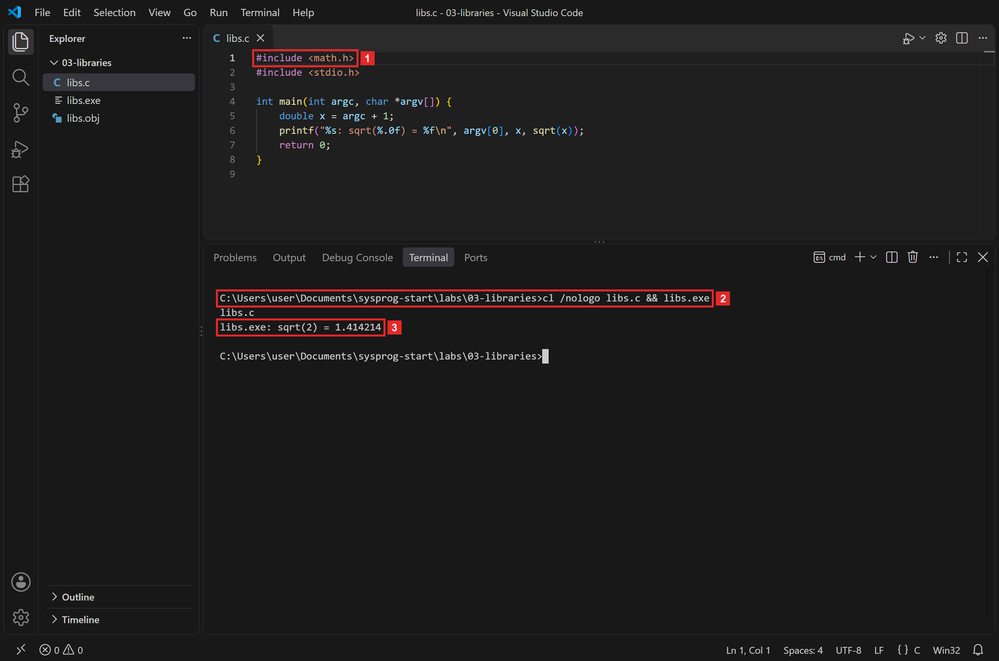
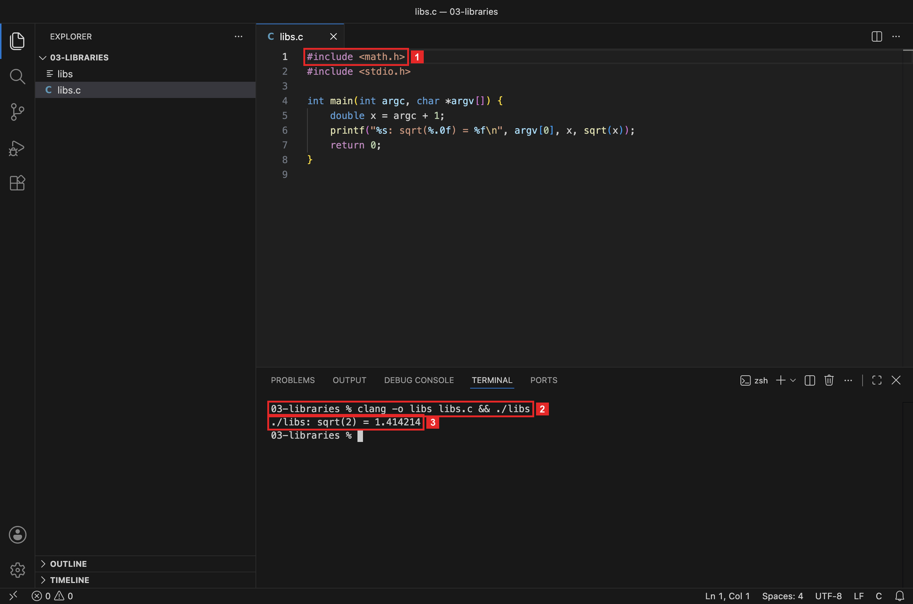
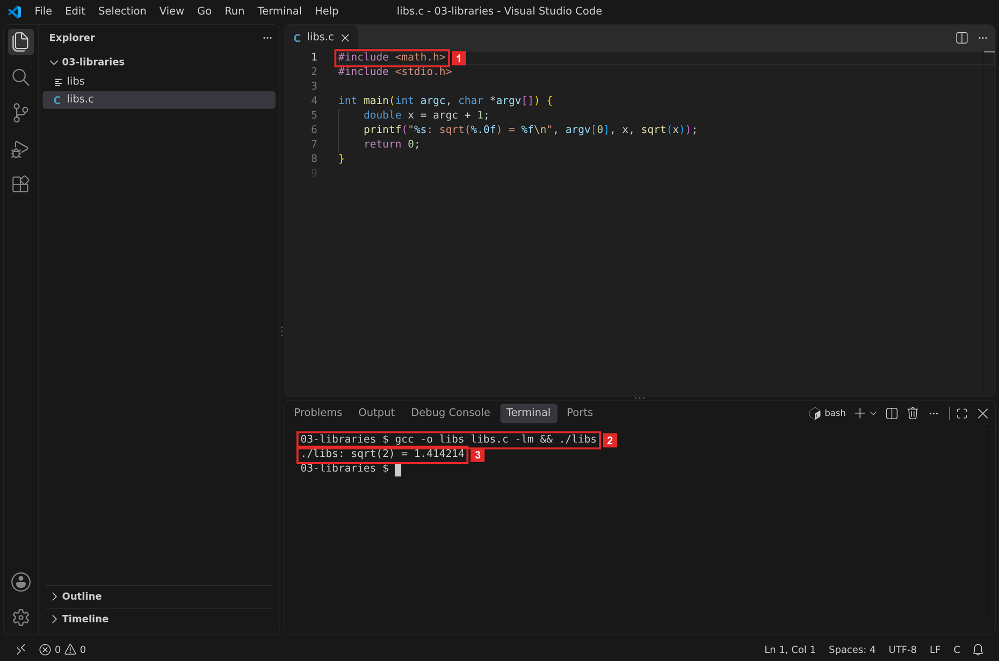
Что на кадре1 — строка
#include <math.h>: объявление функцииsqrt. 2 — команда сборки и запуска. 3 — вывод:libs.exe: sqrt(2) = 1.414214.Что изменилосьПрограмма вызвала функцию
sqrt, которую сама не содержит: её написали создатели библиотеки C. В Explorer появилисьlibs.exeи промежуточный файлlibs.obj.Что на кадре1 — строка
#include <math.h>: объявление функцииsqrt. 2 — команда сборки и запуска. 3 — вывод:./libs: sqrt(2) = 1.414214.Что изменилосьПрограмма вызвала функцию
sqrt, которую сама не содержит: её написали создатели библиотеки C. В Explorer появился файлlibs.Что на кадре1 — строка
#include <math.h>: объявление функцииsqrt. 2 — команда сборки и запуска с ключом-lm. 3 — вывод:./libs: sqrt(2) = 1.414214.Что изменилосьПрограмма вызвала функцию
sqrt, которую сама не содержит. В Linux математические функции лежат в отдельной библиотекеlibm, и ключ-lmпросит компоновщик подключить её. Без него gcc остановится с ошибкойundefined reference to `sqrt': заголовокmath.hтолько объявляет функцию, сама она в библиотеке.В отчёт. что напечатала программа.
Снимок в отчёт · 01 Сохраните окно как
screenshots/01_build_run.png. На снимке должно быть видно: команда сборки и строкаsqrt(2) = 1.414214. -
Посмотрите, какие библиотеки нужны файлуВыполните
dumpbin /nologo /dependents libs.exe | findstr /i .dll. Программаdumpbinвходит в Build Tools;findstrоставляет только строки с.dll.Посмотрите, какие библиотеки нужны файлуВыполнитеotool -L libs. Программаotoolвходит в Command Line Tools.Посмотрите, какие библиотеки нужны файлуВыполнитеldd libs.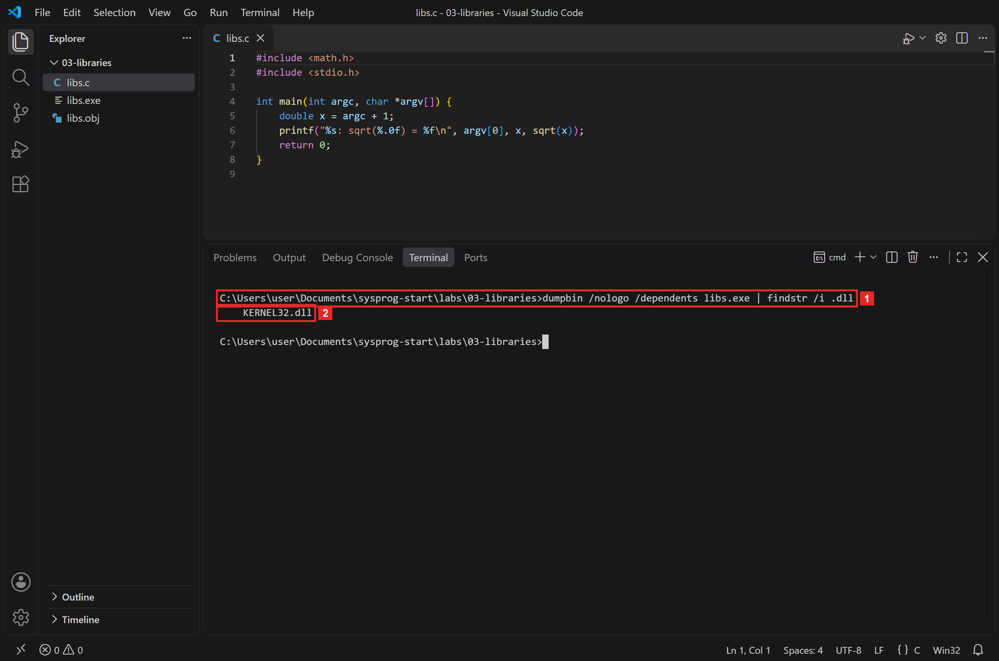
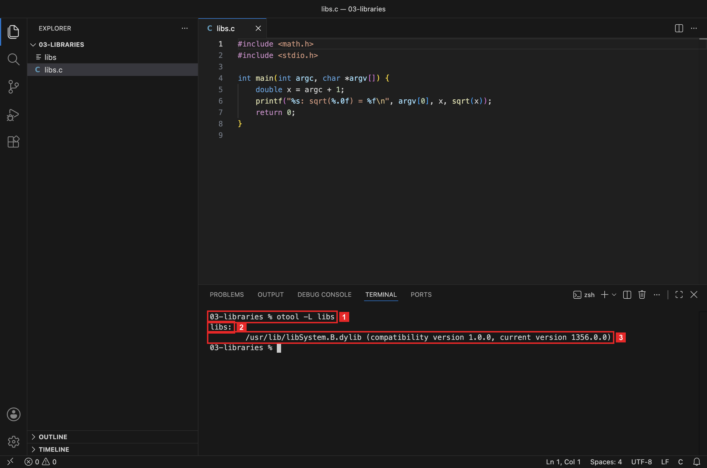
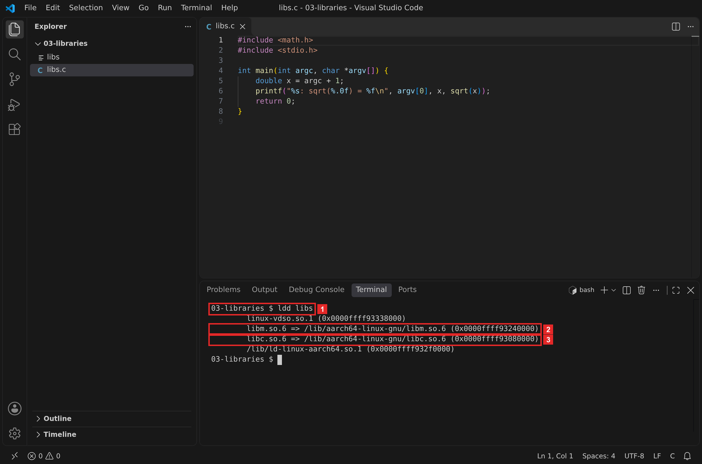
Что на кадре1 — команда. 2 — единственная библиотека:
KERNEL32.dll.Что изменилосьФайлу
libs.exeнужна одна системная библиотека Windows. Функцияsqrtиprintfв списке не видны: MSVC по умолчанию копирует нужные части библиотеки C прямо в.exe— это статическая компоновка. Файл стал больше, зато на другом компьютере ему ничего не нужно, кроме Windows.Что на кадре1 — команда. 2 — имя файла. 3 — единственная библиотека:
/usr/lib/libSystem.B.dylib.Что изменилосьВ macOS функции C, математика и системные вызовы собраны в одну библиотеку
libSystem, поэтому в списке одна строка. Её загружает каждая программа macOS. Это динамическая компоновка: в самом файлеlibsфункцииsqrtнет, есть только запись «взять её из libSystem при запуске».Что на кадре1 — команда. 2 —
libm.so.6, математика, подключённая ключом-lm. 3 —libc.so.6, библиотека C:printfи системные вызовы.Что изменилосьСправа от стрелки — где система нашла файл библиотеки.
linux-vdso.so.1— небольшой кусок ядра, который оно само кладёт в каждый процесс, файла на диске у него нет.ld-linux-aarch64.so.1— загрузчик: он при запуске находит и загружает остальные библиотеки. Это динамическая компоновка: в самом файлеlibsфункцииsqrtнет, есть только запись «взять её из libm».В отчёт. сколько библиотек в списке и как называется библиотека C на своей системе.
Снимок в отчёт · 02 Сохраните окно как
screenshots/02_file_libraries.png. На снимке должно быть видно: выводdumpbin /dependentsotool -Llddдля своей программы. -
Посмотрите библиотеки PythonРазверните панель терминала кнопкой Maximize Panel Size справа над терминалом и скройте боковую панель: Ctrl+B. Выполните команду ниже: она узнаёт у Python путь к
python.exeи передаёт егоdumpbin.for /f "delims=" %p in ('python -c "import sys; print(sys.executable)"') do dumpbin /nologo /dependents "%p" | findstr /i .dllПосмотрите библиотеки PythonРазверните панель терминала кнопкой Maximize Panel Size и скройте боковую панель: ⌘+B. Выполнитеotool -L "$(python3 -c 'import sys; print(sys.executable)')"— путь к интерпретатору подставит сам Python.Посмотрите библиотеки PythonРазверните панель терминала кнопкой Maximize Panel Size и скройте боковую панель: Ctrl+B. Выполнитеldd "$(which python3)".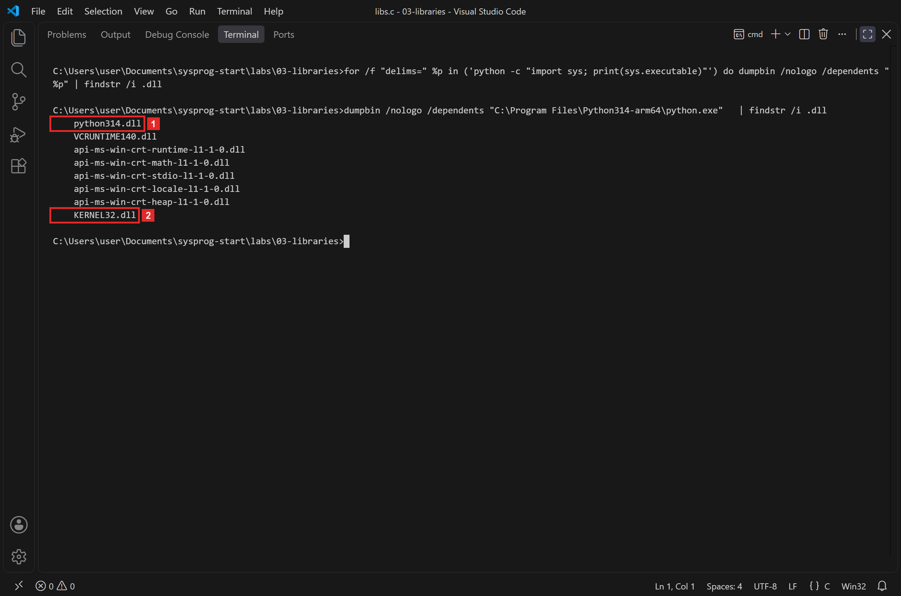
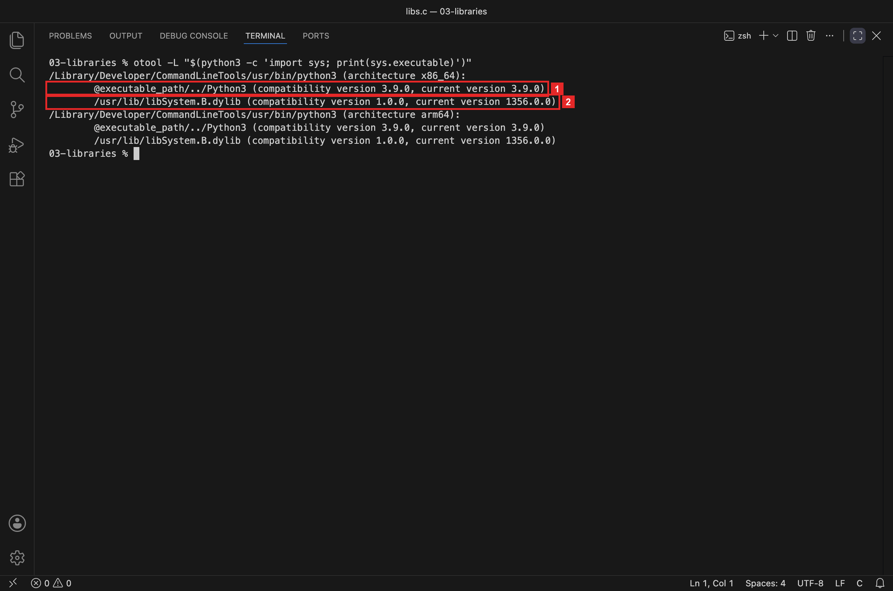
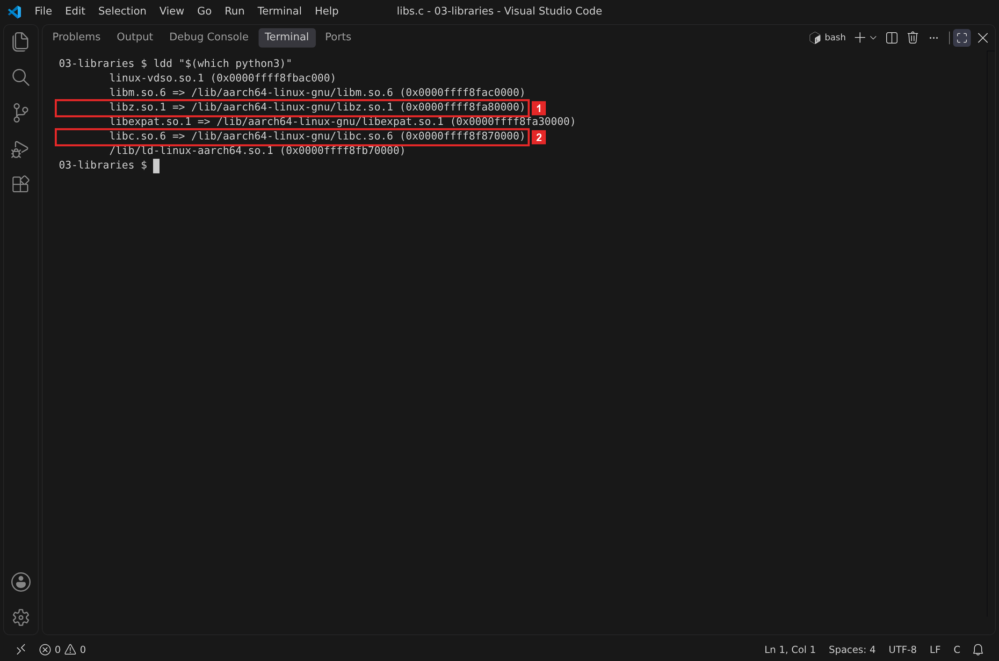
Что на кадре1 —
python314.dll: здесь весь интерпретатор. 2 —KERNEL32.dll. Между ними —VCRUNTIME140.dllи пять библиотекapi-ms-win-crt-…, библиотека C Windows.Что изменилосьФайл
python.exe— маленькая обёртка: он загружаетpython314.dll, а та делает всю работу. Python собран с динамической библиотекой C, поэтому она в списке, а уlibs.exe— нет. Путь к Python —C:\Program Files\Python314-arm64: на кадре Python для ARM64.Что на кадре1 —
@executable_path/../Python3: библиотека с интерпретатором, путь отсчитывается от самого файла. 2 —libSystem.B.dylib.Что изменилосьФайл
python3из Command Line Tools — обёртка, весь интерпретатор лежит в библиотекеPython3. Список выведен дважды, дляx86_64и дляarm64: файл универсальный, в нём программы для двух процессоров. Python с python.org устроен так же, но путь и версия другие.Что на кадре1 —
libz.so.1, сжатие данных. 2 —libc.so.6. Между нимиlibm.so.6иlibexpat.so.1— разбор XML.Что изменилосьУ Python библиотек больше, чем у
libs: интерпретатору нужны сжатие, разбор XML, математика. Это библиотеки, которые нужны при запуске. Остальные Python загружает позже, когда программа их попросит, — это видно в части 2.Снимок в отчёт · 03 Сохраните окно как
screenshots/03_python_libraries.png. На снимке должно быть видно: тот же вывод для файла Python.
§4Часть 2. Библиотеки процесса
Во второй части в работающий процесс Python загружается библиотека, которой в нём не было, и вызывается её функция. Второй терминал показывает список библиотек процесса до и после.
-
Запустите Python и узнайте номер процессаВ том же терминале выполните
python3. В интерпретаторе наберитеimport osиos.getpid().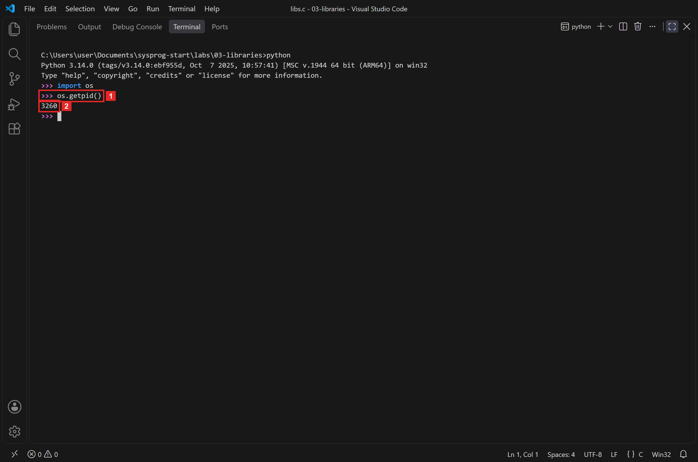
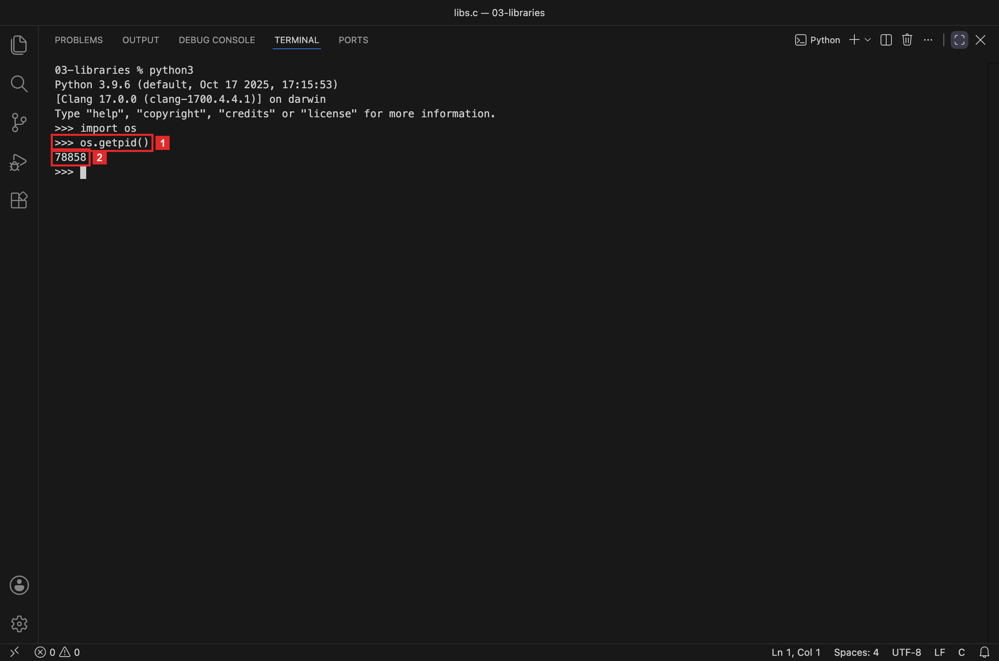
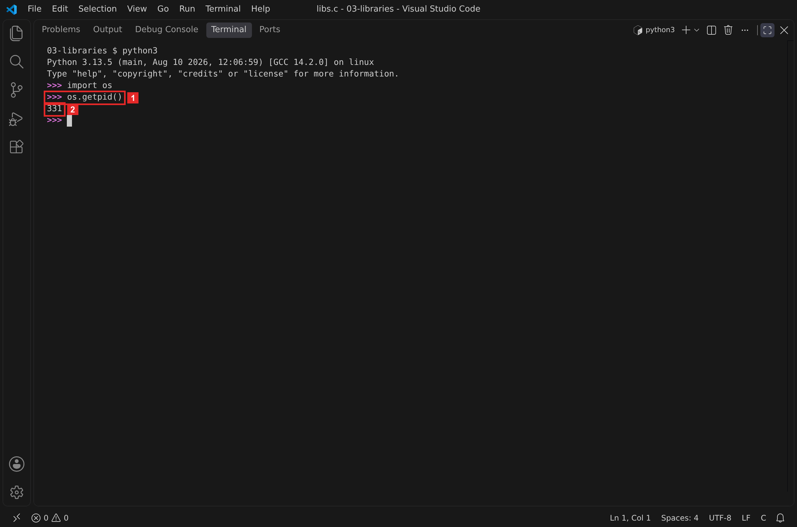
Что на кадре1 — вызов
os.getpid(). 2 — номер процесса Python. Выше — версия: Python 3.14.0 для ARM64.Что изменилосьТерминал теперь занят интерпретатором: приглашение
>>>ждёт команду Python. Процесс работает и ждёт ввода, какhelloв ЛР 1. Номер понадобится во втором терминале.Что на кадре1 — вызов
os.getpid(). 2 — номер процесса Python. Выше — версия: Python 3.9.6 из Command Line Tools.Что изменилосьТерминал теперь занят интерпретатором: приглашение
>>>ждёт команду Python. Процесс работает и ждёт ввода, какhelloв ЛР 1. Номер понадобится во втором терминале.Что на кадре1 — вызов
os.getpid(). 2 — номер процесса Python. Выше — версия: Python 3.13.5.Что изменилосьТерминал теперь занят интерпретатором: приглашение
>>>ждёт команду Python. Процесс работает и ждёт ввода, какhelloв ЛР 1. Номер понадобится во втором терминале.В отчёт. номер процесса Python.
Снимок в отчёт · 04 Сохраните окно как
screenshots/04_python_pid.png. На снимке должно быть видно: запущенный Python и его номер процесса. -
Посчитайте библиотеки процессаНажмите кнопку Split Terminal над терминалом: справа откроется второй. В нём запишите номер в переменную:
set P=номер. Затем выполните две команды:powershell -c "(Get-Process -Id %P%).Modules.Count"— сколько модулей загружено в процесс, иtasklist /m winsqlite3.dll /fi "PID eq %P%"— есть ли среди нихwinsqlite3.dll.Посчитайте библиотеки процессаНажмите кнопку Split Terminal над терминалом: справа откроется второй. В нём запишите номер в переменную:P=номер. Затем выполните две команды:vmmap $P | grep -o '/[^ ]*\.dylib' | sort -u | wc -l— сколько библиотек в памяти процесса, иvmmap $P | grep -o '/[^ ]*pcap[^ ]*' | sort -u— есть ли среди нихlibpcap.Посчитайте библиотеки процессаНажмите кнопку Split Terminal над терминалом: справа откроется второй. В нём запишите номер в переменную:P=номер. Затем выполните две команды:grep -o '/[^ ]*\.so[^ ]*' /proc/$P/maps | sort -u | wc -l— сколько библиотек в памяти процесса, иgrep -o '/[^ ]*sqlite[^ ]*' /proc/$P/maps | sort -u— есть ли среди нихlibsqlite3.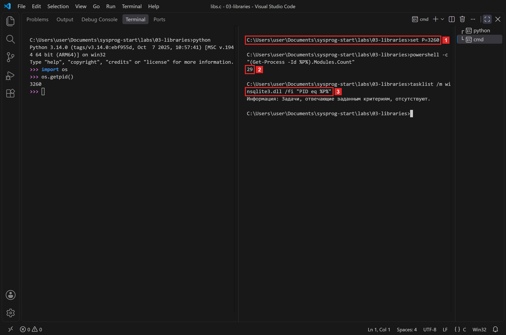
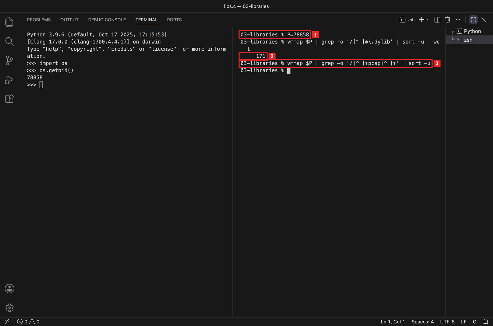
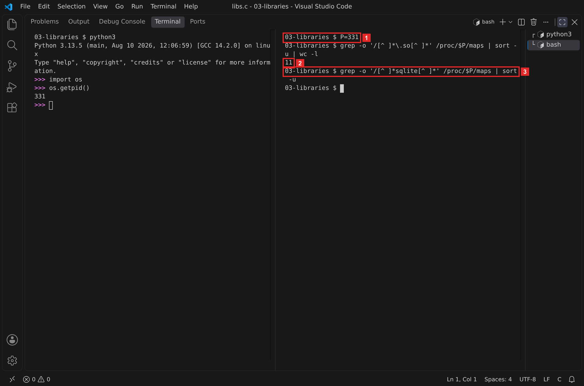
Что на кадре1 — номер процесса в переменной
P. 2 — 29 модулей:python.exeи библиотеки. 3 — поискwinsqlite3.dll: «Задачи, отвечающие заданным критериям, отсутствуют».Что изменилосьВ процессе 29 модулей,
winsqlite3.dllсреди них нет. Это библиотека базы данных SQLite, она входит в Windows и лежит вC:\Windows\System32. Лежать на диске и быть загруженной в процесс — разные вещи.Что на кадре1 — номер процесса в переменной
P. 2 — 171 библиотека в памяти процесса. 3 — поискlibpcap: команда ничего не вывела.Что изменилосьПрограмма
vmmapпечатает карту памяти процесса, аgrepиsort -uоставляют из неё неповторяющиеся пути к.dylib. 171 — так много, потому что Python из Command Line Tools подключает системные фреймворки macOS, а они тянут свои библиотеки.libpcap— библиотека захвата сетевых пакетов, ей пользуется Wireshark в ЛР 14. В процессе её пока нет.Что на кадре1 — номер процесса в переменной
P. 2 — 11 библиотек в памяти процесса. 3 — поискsqlite: команда ничего не вывела.Что изменилосьФайл
/proc/$P/maps— карта памяти процесса, её отдаёт ядро; так же её показывал Системный монитор в ЛР 1.grepиsort -uоставляют неповторяющиеся пути к.so. Библиотеки SQLitelibsqlite3в процессе нет, хотя файл есть на диске.В отчёт. сколько библиотек в процессе до загрузки.
Снимок в отчёт · 05 Сохраните окно как
screenshots/05_libraries_before.png. На снимке должно быть видно: число библиотек процесса Python доctypes.CDLL. -
Загрузите библиотеку и вызовите её функциюВернитесь в левый терминал с Python и наберите по строке:
import ctypes,lib = ctypes.CDLL("winsqlite3.dll"),lib.sqlite3_libversion.restype = ctypes.c_char_p,lib.sqlite3_libversion().Загрузите библиотеку и вызовите её функциюВернитесь в левый терминал с Python и наберите по строке:import ctypes,lib = ctypes.CDLL("libpcap.dylib"),lib.pcap_lib_version.restype = ctypes.c_char_p,lib.pcap_lib_version().Загрузите библиотеку и вызовите её функциюВернитесь в левый терминал с Python и наберите по строке:import ctypes,lib = ctypes.CDLL("libsqlite3.so.0"),lib.sqlite3_libversion.restype = ctypes.c_char_p,lib.sqlite3_libversion().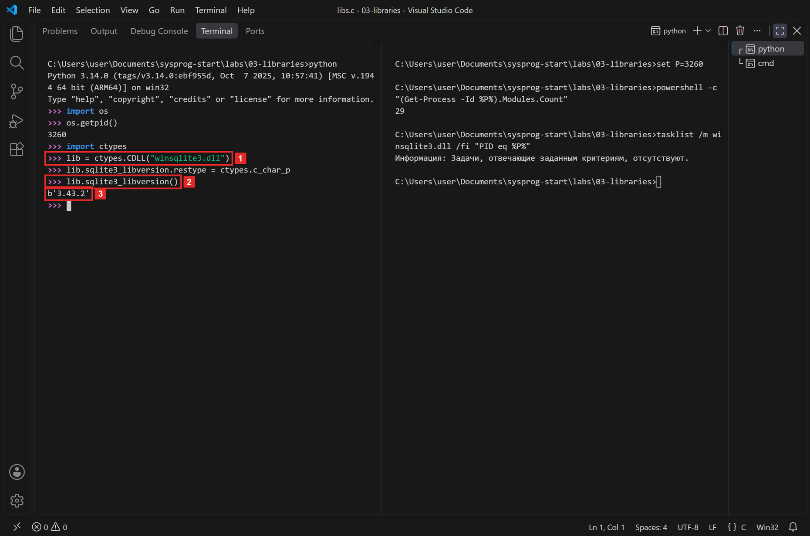
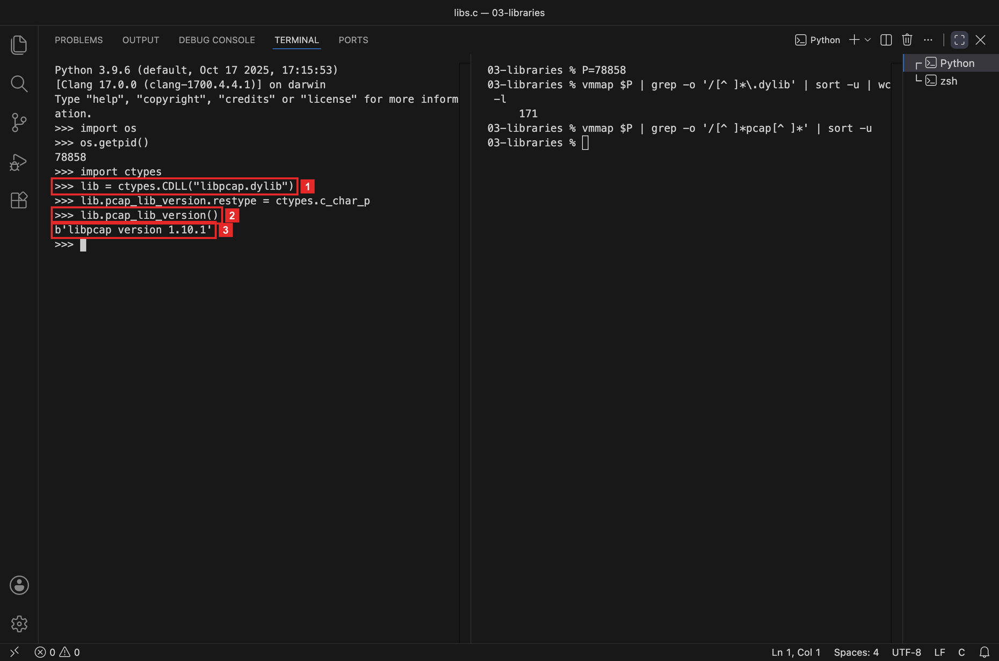
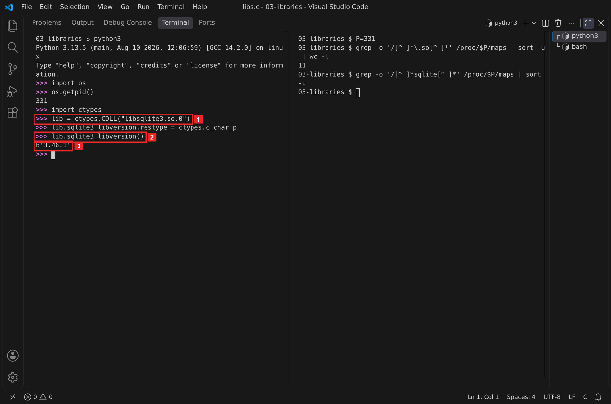
Что на кадре1 — загрузка
winsqlite3.dll. 2 — вызов функцииsqlite3_libversion. 3 — ответ:b'3.43.2', версия SQLite в этой Windows.Что изменилосьPython загрузил библиотеку из
System32и вызвал функцию на C.restype = ctypes.c_char_pговорит Python, что функция возвращает адрес строки C, — без этой строки он принял бы адрес за число. Букваbперед кавычками — байты, как в главе 1.2.Что на кадре1 — загрузка
libpcap.dylib. 2 — вызов функцииpcap_lib_version. 3 — ответ:b'libpcap version 1.10.1'.Что изменилосьPython загрузил библиотеку и вызвал функцию на C.
restype = ctypes.c_char_pговорит Python, что функция возвращает адрес строки C, — без этой строки он принял бы адрес за число. Букваbперед кавычками — байты, как в главе 1.2.Что на кадре1 — загрузка
libsqlite3.so.0. 2 — вызов функцииsqlite3_libversion. 3 — ответ:b'3.46.1', версия SQLite.Что изменилосьPython загрузил библиотеку и вызвал функцию на C.
restype = ctypes.c_char_pговорит Python, что функция возвращает адрес строки C, — без этой строки он принял бы адрес за число. Букваbперед кавычками — байты, как в главе 1.2.В отчёт. что вернула функция библиотеки.
Снимок в отчёт · 06 Сохраните окно как
screenshots/06_library_loaded.png. На снимке должно быть видно: строкаctypes.CDLLи результат вызова функции библиотеки. -
Снова посчитайте библиотеки процессаПерейдите в правый терминал и повторите обе команды шага 5: стрелкой ↑ можно вызвать их из истории.
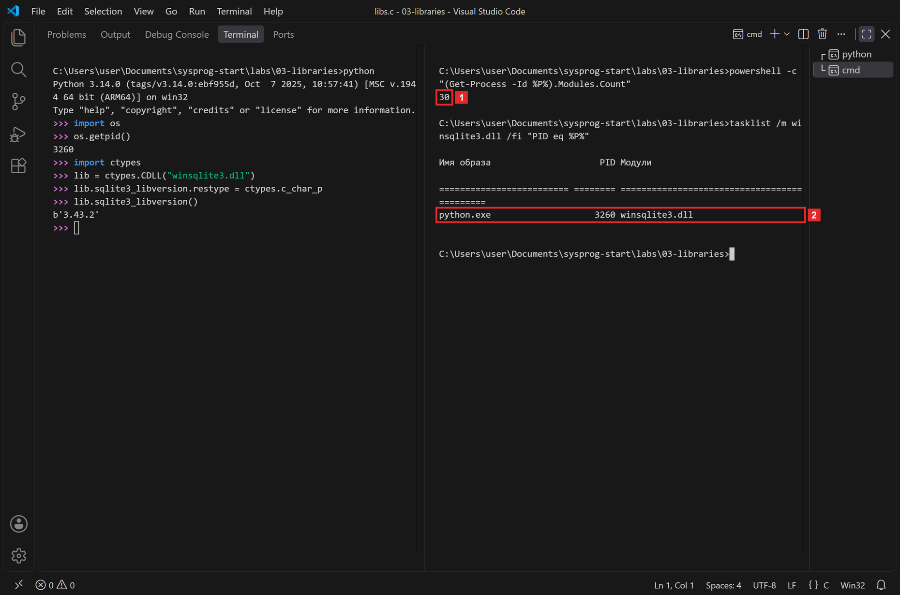
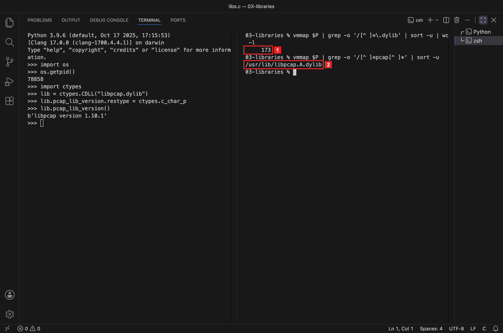
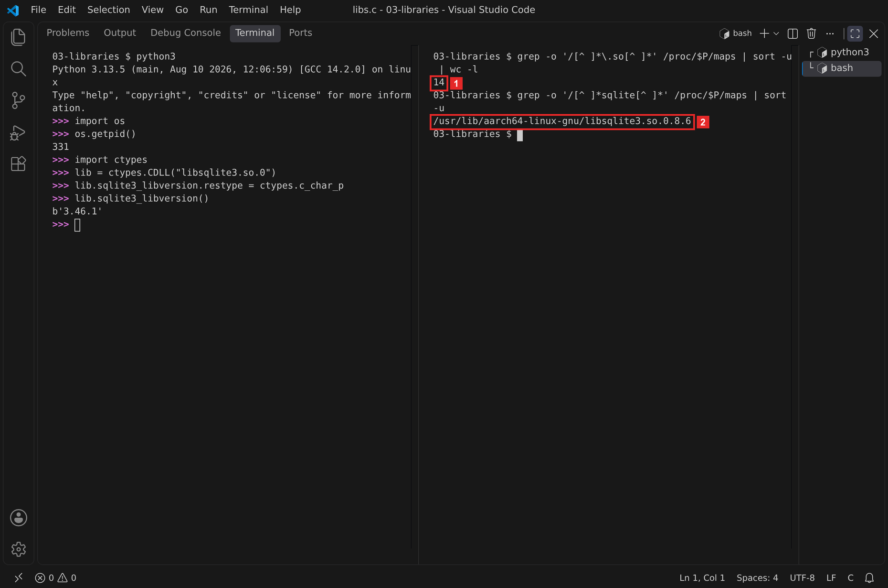
Что на кадре1 — теперь 30 модулей. 2 —
tasklistнашёл процесс:python.exeс тем же номером, модульwinsqlite3.dll.Что изменилосьМодулей стало на один больше:
ctypes.CDLLзагрузилwinsqlite3.dllв работающий процесс. Перезапускать программу не понадобилось. Так в главе 1.2 мозг агента загрузит библиотеку ядраsentry_core.dll.Что на кадре1 — теперь 173 библиотеки. 2 — найдена
/usr/lib/libpcap.A.dylib.Что изменилосьБиблиотек стало на две больше:
libpcapиlibffi— через неёctypesвызывает функции C, она загрузилась командойimport ctypes. Имя файла —libpcap.A.dylib:libpcap.dylibиз команды — короткое имя, которое ведёт к нему. Перезапускать программу не понадобилось. Так в главе 1.2 мозг агента загрузит библиотеку ядраlibsentry_core.dylib.Что на кадре1 — теперь 14 библиотек. 2 — найдена
/usr/lib/aarch64-linux-gnu/libsqlite3.so.0.8.6.Что изменилосьБиблиотек стало на три больше:
libsqlite3, модуль Python_ctypesизimport ctypesи библиотекаlibffi, через которуюctypesвызывает функции C. Имя файла длиннее, чем в команде:libsqlite3.so.0— короткое имя, которое ведёт к файлу с полной версией. Перезапускать программу не понадобилось. Так в главе 1.2 мозг агента загрузит библиотеку ядраlibsentry_core.so.В отчёт. сколько библиотек стало и какой файл библиотеки нашёлся.
Снимок в отчёт · 07 Сохраните окно как
screenshots/07_libraries_after.png. На снимке должно быть видно: новое число библиотек и строка загруженной библиотеки.
§5Что получилось
| Windows | macOS | Linux | |
|---|---|---|---|
| Чем смотреть библиотеки файла | dumpbin /dependents | otool -L | ldd |
Библиотеки libs | KERNEL32.dll — библиотека C внутри файла | libSystem.B.dylib | libm.so.6, libc.so.6 |
| Где весь Python | python314.dll | библиотека Python3 | в самом python3 |
| Чем смотреть библиотеки процесса | PowerShell, tasklist /m | vmmap | /proc/PID/maps |
До и после ctypes.CDLL | 29 → 30 | 171 → 173 | 11 → 14 |
Библиотеку можно увидеть в двух местах: в файле — список того, что загрузится при запуске, и в процессе — то, что загружено сейчас. Второй список длиннее, и он растёт, пока программа работает.
§6Отчёт
Бланк — в labs/03-libraries/report.md. Замените каждый пропуск ___ данными со своего экрана. Рядом положите libs.c; собранную программу не добавляйте. Коммит — labs 03: библиотеки, отчёт. После отправки GitHub Actions соберёт libs.c и проверит строку sqrt(2) = 1.414214.
# ЛР 3. Библиотеки программы Система: ___ ## Библиотеки файла Программа напечатала: ___ Команда для списка библиотек файла: ___ Библиотеки libs: ___ Почему в списке нет отдельной математической библиотеки (или почему она есть): ___ Где лежит интерпретатор Python (файл или библиотека): ___ ## Библиотеки процесса PID Python: ___ Библиотек в процессе до ctypes.CDLL: ___, после: ___ Загруженная библиотека и её полный путь: ___ Функция вернула: ___ Не получилось: ___ ## Снимки экрана       
Кроме чисел в отчёт кладутся 7 снимков экрана. В папке labs/03-libraries/screenshots уже лежат заглушки с нужными именами, а в report.md — ссылки на них с подписями. Сделайте снимок окна после шага из таблицы и сохраните его поверх заглушки с тем же именем: подпись и ссылку менять не нужно, на GitHub отчёт сразу покажет ваш снимок. В каждом шаге такой снимок отмечен оранжевой строкой «Снимок в отчёт».
Как снять окно: Win+Shift+S → «Окно», затем сохранить из «Ножниц» как PNG⌘+⇧+4, затем Пробел и щелчок по окну — PNG появится на Рабочем столеPrtSc → «Окно», PNG сохраняется в папку «Изображения/Снимки экрана». Снимок — всё окно программы, без обрезки; имя файла — строго из таблицы.
| № | После шага | Файл | Что должно быть видно |
|---|---|---|---|
| 01 | 1 | 01_build_run.png | команда сборки и строка sqrt(2) = 1.414214 |
| 02 | 2 | 02_file_libraries.png | вывод dumpbin /dependentsotool -Lldd для своей программы |
| 03 | 3 | 03_python_libraries.png | тот же вывод для файла Python |
| 04 | 4 | 04_python_pid.png | запущенный Python и его номер процесса |
| 05 | 5 | 05_libraries_before.png | число библиотек процесса Python до ctypes.CDLL |
| 06 | 6 | 06_library_loaded.png | строка ctypes.CDLL и результат вызова функции библиотеки |
| 07 | 7 | 07_libraries_after.png | новое число библиотек и строка загруженной библиотеки |
§7Проверьте себя
Почему в Windows у libs.exe одна библиотека, а у python.exe — восемь?
MSVC по умолчанию собирает программу со статической библиотекой C: printf и sqrt скопированы в libs.exe. Python собран с динамической библиотекой C — VCRUNTIME140.dll и api-ms-win-crt-… — и весь интерпретатор вынесен в python314.dll.
Зачем в Linux ключ -lm?
Математические функции в Linux лежат в отдельной библиотеке libm, и компоновщик подключает её только по просьбе: -l значит «подключить библиотеку», m — её имя без lib. Заголовок math.h только объявляет sqrt.
Почему библиотека есть на диске, но её нет в процессе?
Процесс загружает только то, что записано в его файле, и то, что он сам попросил во время работы. Остальные библиотеки системы лежат на диске и в память этого процесса не попадают.
Что будет, если в ctypes.CDLL написать имя несуществующей библиотеки?
Python сообщит об ошибке: OSError в macOS и Linux, FileNotFoundError в Windows, с текстом, что файл не найден. Программа на C с отсутствующей библиотекой в списке зависимостей не запустилась бы вовсе — ошибку выдал бы загрузчик системы.